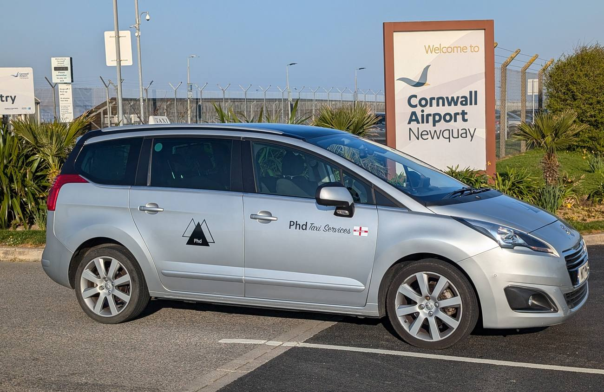

Cornwall Airport Newquay Taxi Transfers
Cornwall Airport Newquay is roughly 15 miles from PHD's Bodmin/Luxulyan base - around 20-25 minutes by road, and the most frequent run on the books. There's no reliable walk-up taxi rank at Newquay Airport, so a pre-booked transfer isn't just more comfortable, it's the dependable option. PHD tracks your flight and meets you at arrivals, taking you door to door from there.
What you actually get
- Flight tracked - a delay just means a later pickup, not a missed one
- No night surcharge: the quote for 2pm is the same quote for 2am
- Meet-and-greet at arrivals on request
- Secure contactless payment accepted

Newquay Airport FAQ
Around 15 miles, roughly 20-25 minutes by road in normal traffic - PHD's most regular transfer route.
Not a reliable one - pre-booking is the recommended way to guarantee a pickup. PHD tracks your flight so your driver is there when you land, delay or not.
Other PHD transfers
Exeter Airport & St Davids Station
Long-distance transfer to Exeter Airport or Exeter St Davids for mainline rail connections - guide price from £170.
Bristol Airport
The furthest of the regular airport runs - guide price from £290, same no-surcharge policy whatever the hour.
Plymouth
Rail, ferry port or city centre - guide price from £95, around 45 minutes from Bodmin.
Ready to book your Newquay Airport transfer?
WhatsApp your pickup point, destination and travel date for a guide price.